在平面上输出与绘制指定性质(4)¶
Multiwfn manual, p.82–92.英文原文见同名 English 章节。 Images:
../imgs/.
所需信息：GTFs（基于原子核/原子电荷的 ESP 与 RDG 及 sign(λ2)ρ 的 promolecular 近似版本除外）、原子坐标
3.5 在平面上输出与绘制指定性质(4)¶
使用该功能的基本步骤如下。用户只需按程序提示即可完成全部操作，仅有少数要点需要说明。
- 选择实空间函数 2. 选择图形类型 3. 设置两个维度上的网格点数 4. 定义平面 5. 查看图形 6. 后处理（调整绘图参数、保存图形、将数据导出为纯文本文件等） 值得注意的是，进入该功能后将看到实空间函数选择菜单；若选择选项 111（隐藏选项），则待绘制的实空间函数将为某原子的 Becke 权重或两原子间的 Becke 重叠权重。若选择选项 112（另一隐藏选项），则将绘制给定原子或碎片的 Hirshfeld 权重。
若 settings.ini 中的参数 iplaneextdata 设为 1，则平面内数据将不由 Multiwfn 内部计算，而是直接从外部纯文本文件加载。平面内点的坐标将自动输出至当前文件夹，可用第三方工具（如 Gaussian 的 cubegen 工具）在这些点上计算函数值。
3.5.1 图形类型(Graph types)¶
目前 Multiwfn 支持七种展示平面内数据的图形类型。1 颜色填充图(Color-filled map)。该类图用不同颜色表示不同区域的实空间函数值，下面给出两个例子。
默认采用“彩虹(Rainbow)”颜色过渡，若函数值超出色标下（上）限，则该区域将填充为黑（白）色。通过后处理菜单中的“设置颜色过渡(Set color transition)”可选择其它颜色过渡方式。
通过后处理菜单中的“启用显示等值线(Enable showing contour lines)”可在图上同时绘制等值线。还可用其它选项控制是否显示原子标签与化学键。
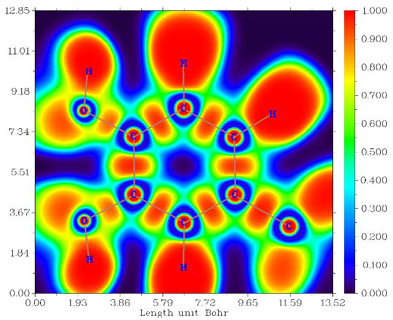
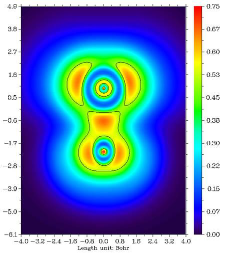
2 等值线图(Contour line map)。该图通常用实线表示正值区域，用虚线表示负值区域。
等值线数目可由用户调整（详见 3.5.4 节），也可用后处理菜单中的选项“2 在等值线上启用显示等值面值(Enable showing isovalue on contour lines)”在等值线上标注等值面值。
若要在等值线之间填充颜色（见上右图），可在后处理菜单中选择“9 启用为等值线填充颜色(Enable filling colors for contour lines)”。然后若再次选择选项 9，可进一步调整填充效果，如色标、颜色过渡等。
仅对等值线图，若所选绘制的实空间函数为轨道波函数，不仅可通过输入一个轨道序号绘制一个轨道，还可通过输入两个轨道序号（如 3,5）同时绘制两个轨道，例子见 4.4.5 节。
后处理菜单中的选项 4 用于切换是否在图中显示原子标签或参考点（涉及某些实空间函数，如相关穴(correlation hole)与源函数(source function)）。原子标签的大小与形式（即显示原子序号还是元素名）可分别通过 settings.ini 中的 pleatmlabsize 与 iatmlabtype 参数设置。参考点在图上表示为蓝色星号。默认仅当原子与平面间距离小于 settings.ini 中的 disshowlabel 时才显示相应原子标签。要改变该距离阈值，既可调整 setting.ini 中的该值，也可在后处理菜单中选择选项 17。若 settings.ini 中的 iatom_on_plane_far 参数设为 1，则即使距离大于阈值，标签仍将显示，但以细体而非粗体显示。
后处理菜单中的选项 8 用于切换是否显示化学键。当原子对满足以下两个条件时显示化学键：(1) 两原子间距离小于成键阈值，该阈值可在主功能 0 的 GUI 窗口中用相应标尺调整。(2) 两原子均与绘图平面足够接近（小于上述 disshowlabel 参数）。
后处理中的选项 15 用于绘制对应于 vdW 表面（电子密度=0.001 a.u.，由 R. F. W Bader 在 J. Am. Chem. Soc., 109, 7968
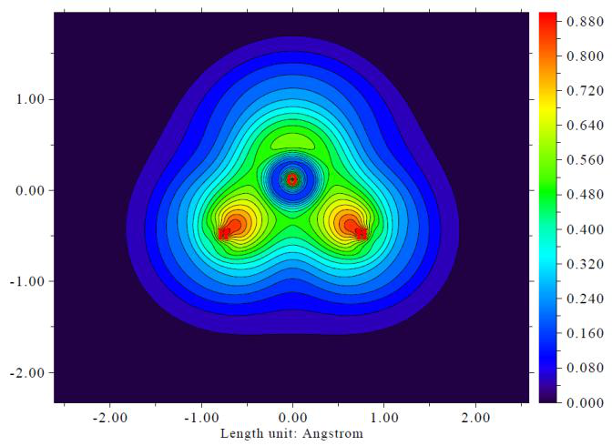
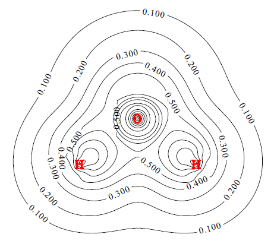
(1987) 中定义）的等值线。这对分析 vdW 表面上静电势分布很有用。该等值线也可通过同一选项绘制于梯度线与矢量场图中。等值线的颜色、标签大小与线形可通过选项 16 调整。
以上段落的内容同样适用于颜色填充图、梯度线图与矢量场图（见下）。
3 立体图(Relief map)。用高度表示每一点的值。若数值过大，在图中将被截断，可选择以一因子缩放数据以避免截断。图形显示在交互界面上，可旋转、放大/缩小图形。
4 阴影立体图(Shaded relief map)与 5 带投影的阴影立体图(Shaded relief map with projection)。在这两种类型中立体图带有阴影。后者还绘制一幅颜色填充图作为投影。表面上的网格可在后处理阶段关闭。
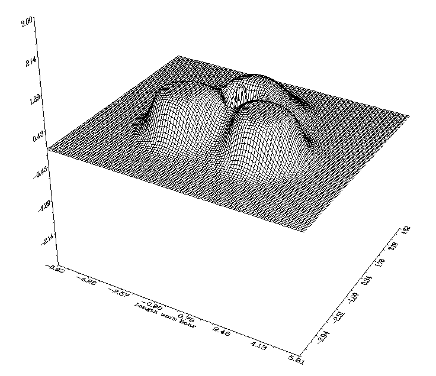
6 带/不带等值线的梯度线图(Gradient line map with/without contour lines)。该图形类型表示实空间函数的梯度方向，可决定是否在图上同时显示等值线。注意由于需要计算实空间函数的梯度，且图形库生成梯度线需要一些时间，计算与绘图开销明显高于其它图形类型。
在后处理菜单的选项“11 设置绘制梯度线的详细参数(Set detailed parameters of plotting gradient line)”中，可设置各种绘图参数：
- 子选项 1：梯度线的积分步长，值越小图形越精细
- 子选项 2：梯度线之间的间隔，值越小线越密
-
子选项 3：绘制新梯度线的判据，试着调节它便会知道该参数如何影响图形
-
子选项 4：积分方法。RK4 最稳健但最耗时。默认的 RK2 在精度与速度间取得良好平衡
-
子选项 5 与 6：梯度线的颜色与宽度
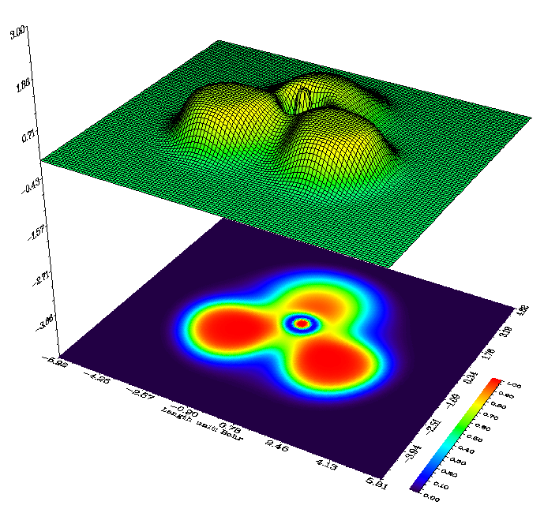
7 带/不带等值线的矢量场图(Vector field map with/without contour lines)。该图形类型与上一种很相似，只是梯度线被箭头取代，箭头均匀分布于网格上，表示相应点处的梯度矢量。可设置箭头颜色，或按函数值大小给箭头映射不同颜色，也可反转箭头方向。选项 10 值得一提，若通过该选项将缩放上限设为 x，则若梯度矢量的模超过该值，该矢量将被缩放至其模等于 x。
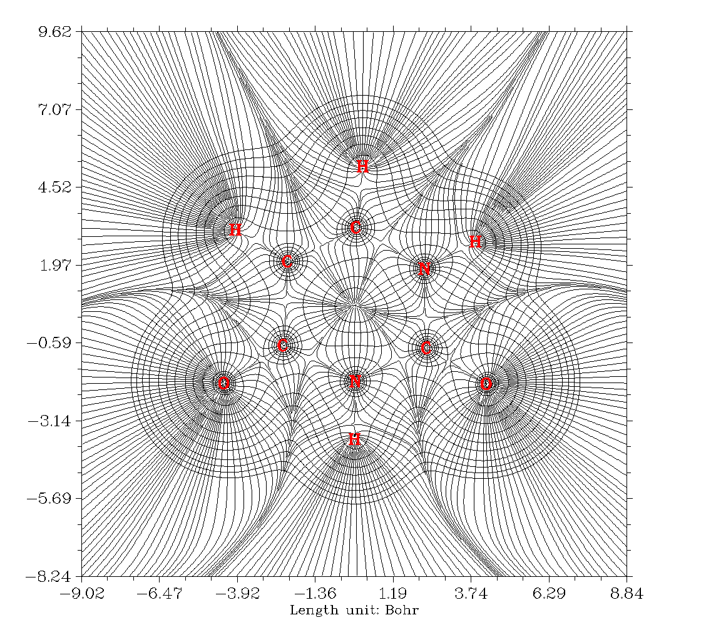
3.5.2 设置网格、平面与绘图区域(Setting up grid, plane and plotting region)¶
当程序要求输入两个维度上的网格点数时，可输入如 100,150，表示维度 1 与 2 上的网格点数分别为 100 与 150，总数为 100*150=15000，均匀分布于绘图区域内。对于“立体图(Relief map)”、“阴影立体图(Shaded relief map)”与“带投影的阴影立体图(Shaded relief map with projection)”，一般推荐 100,100；若超过该值，图中线条会显得过于拥挤。对于其它图形类型推荐 200,200。当然，数值设得越大图片越漂亮光滑，但计算等待时间越长。切记 ESP 计算非常耗时，最好用较少网格点，预览时推荐 80,80 或更少。
Multiwfn 提供 8 种定义绘图平面的模式：1. XY 平面：用户输入 Z 值以唯一定义 XY 平面。2. XZ 平面：用户输入 Y 值以唯一定义 XZ 平面。3. YZ 平面：用户输入 X 值以唯一定义 YZ 平面。4. 由三个原子定义：输入三个原子的序号，以其原子核坐标定义平面。5. 由三点定义：输入三点的坐标以定义平面。6. 输入原点与平移矢量：该方式仅适于专家，输入的两个平移矢量必须正交。7. 定义平行于一化学键同时垂直于由三原子定义平面的平面 8. 在特定原子组成平面之上或之下
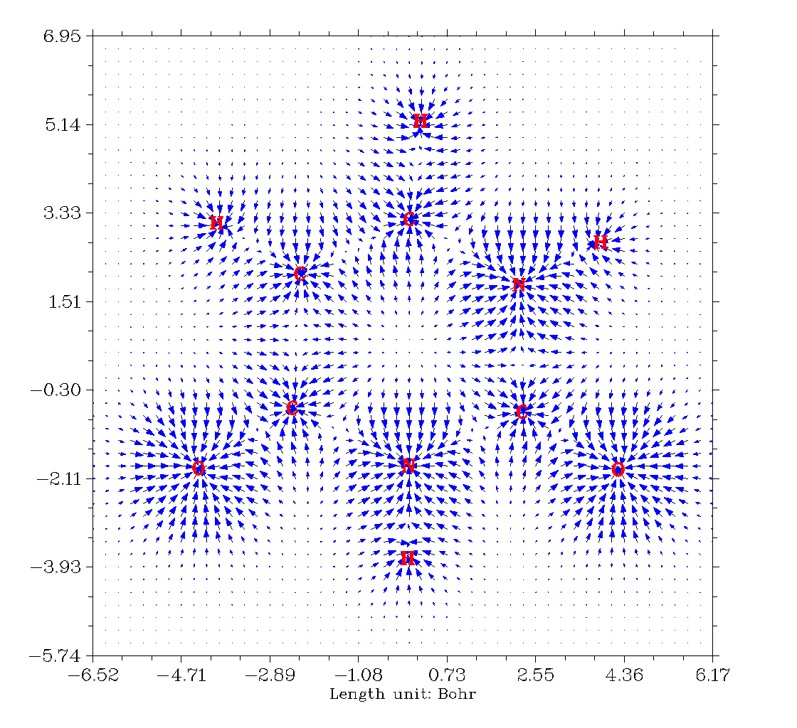
详情如下：
模式 1 至 5 对于模式 1~5，实际绘图区域为所定义平面的子区域。Multiwfn 自动将绘图区域设为紧紧包围整个分子（对模式 1、2 与 3）或覆盖所输入的三核/三点（对模式 4 与 5），最终绘图区域再向外扩展一小段距离以避免截断感兴趣区域。外延距离默认为 4.5 Bohr，若发现感兴趣区域仍被截断，只需通过选项“0 设置平面类型 1~5 的外延距离(Set extension distance for plane type 1~5)”增大该值，也可直接修改默认值，其由 settings.ini 中的 Aug2D 参数控制。
下图示意当选择模式 4 或 5 定义绘图平面时实际绘图区域如何确定。图中 X 与 Y 轴对应最终所见的实际 X 与 Y 轴。显然，三点或三原子的输入顺序直接影响图形。
模式 6 对于模式 6，绘图区域按如下确定，其中每支黑色箭头表示平移矢量 1，每支棕色箭头表示平移矢量 2，蓝色点表示原点。箭头数目即用户设置的网格数。显然，该模式使用户可完全控制绘图平面设置。
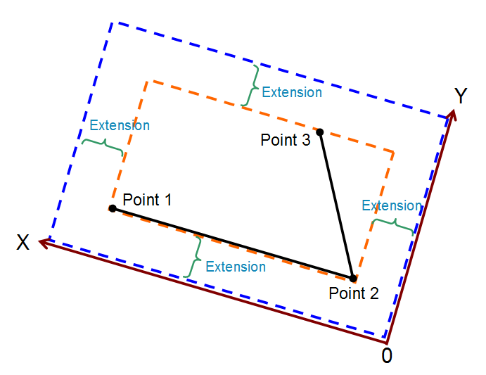
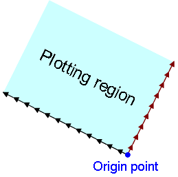
模式 7 当想定义切割一化学键的绘图平面时，模式 7 非常有用，见下图示意，紫色矩形即待绘制平面：
要定义该平面，应选择模式 7，再输入 3,5 以用这两个原子定义绘图所平行于的轴，再输入 2,3,10（或 2,5,10 等）以用它们定义绘图平面所垂直于的平面。之后需输入 X 与 Y 轴长度，如分别为 10 与 7 Bohr。
模式 8 通过该模式可在感兴趣原子之上或之下绘制局域平面。通常，该模式用于研究环之上/之下的函数分布。见下图例子，透明蓝色区域对应绘图平面。在该模式中应输入原子的序号以定义拟合平面（绘图平面将平行于它）与几何中心，再输入绘图平面与几何中心间的垂直距离（即下图中的 d。正值与负值分别对应拟合平面之上与之下），再输入绘图平面的长度。注意在该模式中绘图平面为正方形，几何中心向该平面的投影点对应平面中心。
之后，将在 Multiwfn 命令行窗口中看到三条命令，可将其复制到 VMD 控制台窗口中运行，随后绘图平面将被画出，如下图所示，便于判断绘图平面是否正确定义。
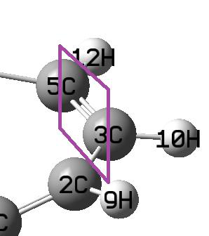
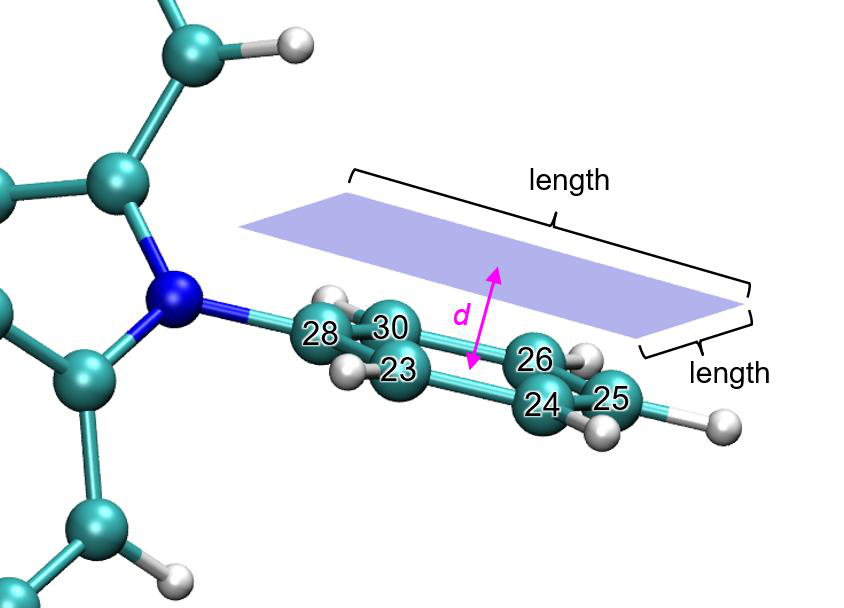
关于绘图平面的旋转与平移 对于模式 4、5 与 8，若发现最终图形中内容偏斜，或感兴趣部分不在图形中央，可在选择这些模式之一前选择“-1：设置类型 4、5 与 8 图的平移与旋转(Set translation and rotation of the map for plane types 4, 5 and 8)”。例如，若发现之前绘制图形中的内容应平移 (-3,1.5) Bohr 再旋转
35°，则在该选项中应先输入 -3,1.5 再输入 35，所得图形将符合预期。使用该选项的实际例子发布于 http://bbs.keinsci.com/thread-11037-1-1.html。
3.5.3 后处理界面中的选项(Options in post-processing interface)¶
绘制图形后，将看到一个菜单，其中有许多用于调整或改善图形质量的选项。由于其中许多已在上文介绍，一些将在下节提及，且许多是自解释的，这里仅提及少数。
-9 仅绘制某些原子周围的数据(Only plot the data around certain atoms)：有时图中仅少数区域是感兴趣的；若想屏蔽其它区域，该选项可能有用。选择该选项后，假设输入 2,4,8-10，则仅绘制原子 2,4,8,9,10 周围的实空间函数（待绘制数据实为原始平面数据乘以所输入碎片的 Hirshfeld 权重）。下次再选该选项时，原始数据将被恢复。
-7 将数据乘以一因子(Multiply data by a factor)：主要用于缩放平面数据的范围。-6 将当前平面数据导出至当前文件夹下的 plane.txt(Export the current plane data to plane.txt in current folder)：用该选项导出平面数据后，可非常方便地用 Sigmaplot 等第三方绘图软件重绘数据。
-2 设置 X、Y（与色标）轴的标签间隔(Set label interval in X, Y (and color scale) axes)：该选项决定坐标轴上标签间的间距。若图上未显示坐标轴标签，即表示当前间隔太大。
-1 重新显示图形(Show the graph again)：调整绘图参数后，选择该选项以重绘图形查看效果。
0 将图形保存为文件(Save the graph to a file)：将图形导出为当前文件夹下的图形文件。图形格式与尺寸的确定方法见 2.8 节。
19 在等值线上启用显示函数的极值(Enable showing extrema of a function on a contour line)：通过该选项，可在电子密度等值线上绘制如静电势的极大与极小值。该选项的说明见 4.4.12 节。
3.5.4 设置等值线(Setting up contour lines)¶
对于图形类型 1、2、6 与 7，可绘制等值线（若未显示，在后处理菜单中选择“2 启用显示等值线(Enable showing contour lines)”）。后处理菜单中还有“改变等值线设置(Change setting of contour lines)”选项。在该界面中，首先列出当前等值线的值，可用以下子选项修改：
选项 1：保存当前设置并返回上级菜单(Save current setting and return to upper menu)。然后若选择“重新显示图形(Show the graph
again)”，将出现具有新等值面值设置的图形。
选项 2：输入新值以替换某等值线的旧值(Input a new value to replace old value of a contour line)。选项 3：新增一等值线并输入其等值面值(Add a new contour line and input the isovalue for it)。选项 4：删除某些等值线(Delete some contour lines)。选项 6：将当前等值面值设置导出为纯文本文件(Export current isovalue setting to a plain text file)，可用该功能为不同体系与实空间函数保存多套喜爱的等值面值设置。
选项 7：从外部文件加载等值面值设置(Load isovalue setting from external file)，格式应与子功能 6 输出的文件相同。
选项 8：按等差数列生成等值面值(Generate isovalues according to arithmetic sequence)，用户需输入初值、步长与总数。绘制 ELF/LOL 时，建议输入 0,0.05,21 以生成 0.0~1.0 范围内步长 0.05 的等值面值。可选择是否清除已有等值线，若选 n，则新等值线将追加至旧等值线之后。
选项 9：类似功能 8，但按等比数列(Like function 8, but according to geometric series)。选项 10：可用该功能加粗某些等值线(Some contour lines can be bolded with this function)，默认无加粗。要加粗某些线，选择该功能并输入想加粗几条，再依次输入其序号。若已有某些线被加粗，选择该功能将取消所有加粗。
选项 11：设置正值等值线的颜色(Set color for positive contour lines)，需输入颜色序号。选项 12：设置正值等值线的线形(Set line style for positive contour lines)，需输入两个整数，第一个表示线段长度，第二个表示线段间空隙长度。例如，10,15 表示正值等值线由长度 10 的线段与长度 15 的空隙交替组成。
选项 13、14：类似选项 11 与 12，但针对负值部分(Like options 11 and 12, but for negative part)。选项 15：若选该选项，正负线将分别设为“深红、宽=6、实线(crimson, width=6, solid line)”与“蓝、宽=6、长虚线(blue, width=6, long dashed line)”，则保存的图片将非常适于发表；如在所得图形文件中所见，两类线清晰且易于区分。
3.5.5 在平面图上绘制临界点、路径与盆间路径(Plot critical points, paths and interbasin paths on plane graph)¶
CPs 与路径可绘制于颜色填充图、等值线图、梯度线图与矢量场图上。下面是包含临界点、拓扑路径与盆间路径的典型电子密度梯度线图。
要在平面图上附加 CPs 与路径，在用主功能 4 绘制平面图之前，需进入拓扑分析模块（主功能 2），搜索 CPs 并生成路径。之后，返回主菜单并如常绘制平面图，将发现 CPs 与路径已出现在图上。图中棕、蓝、橙、绿点分别表示 (3,-3)、(3,-1)、(3,+1)、(3,+3) 临界点。粗深棕色线表示键路径。
在后处理菜单的选项“4 设置绘制临界点与路径的细节(Set details of plotting critical points and paths)”中，可选择允许显示哪些类型的 CPs，并可设置标记大小、粗细、距离阈值与路径线颜色。默认若 CP 或路径中一点与绘图平面间的垂直距离超过 0.5 Bohr，该 CP 或路径点将不显示，阈值可通过“8 设置显示 CPs 的距离阈值(Set distance threshold for showing CPs)”与“9 设置显示路径的距离阈值(Set distance threshold for showing paths)”修改。
盆间路径（上图中深蓝色线）源自 (3,-1) CPs，这些路径将整个空间划分为单个原子盆。也可在等值线图、梯度线图与矢量场图上附加盆间路径。要绘制盆间路径，应首先确认在拓扑分析模块中已至少找到一个 (3,-1) CP 且其与当前绘图平面足够接近（小于 settings.ini 中的 disshowlabel），然后可在后处理阶段找到“生成并显示盆间路径(Generate and show interbasin paths)”选项，选择它，待盆间路径生成完毕，再次重绘平面图，将发现这些盆间路径已呈现。
若希望盆间路径变短或变长，在生成盆间路径前在后处理阶段选择“设置盆间路径生成的步长与最大迭代数(Set stepsize and maximal iteration for interbasin path generation)”选项，程序将提示输入步长与迭代数，最大
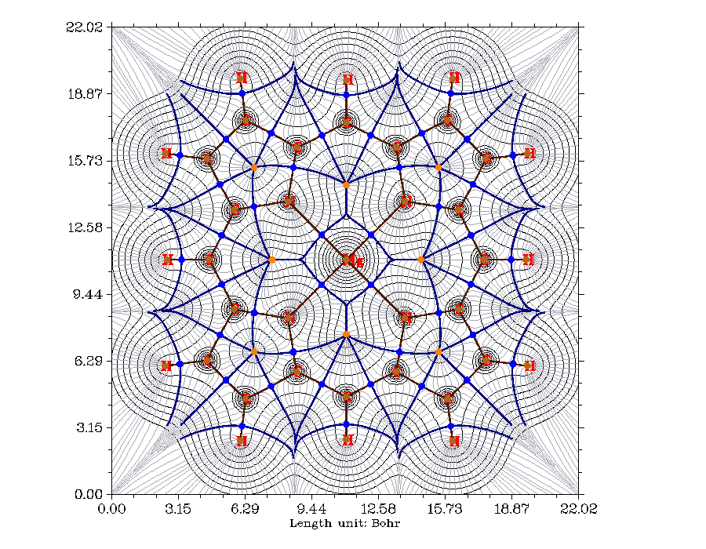